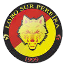

El Deportivo Pereira, llamado oficialmente por su razón social Deportivo Pereira Futbol Club S.A., y conocido anteriormente como Corporación Social Deportiva y Cultural de Pereira Corpereira, es un club de fútbol colombiano de la ciudad de Pereira, capital del departamento de Risaralda, fue fundado el 12 de febrero de 1944. Es uno de los equipos históricos del Fútbol Colombiano, ya que ha competido 74 temporadas en primera división
